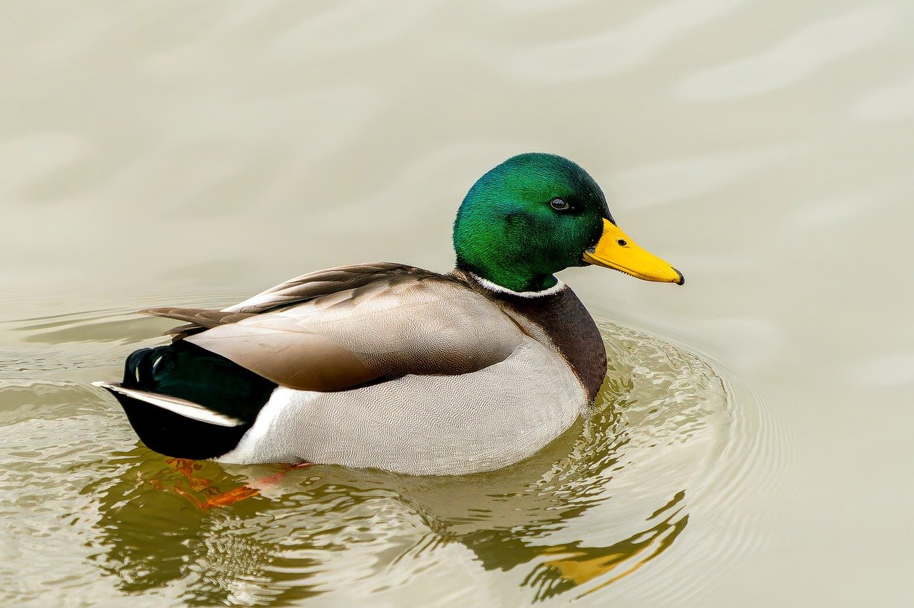
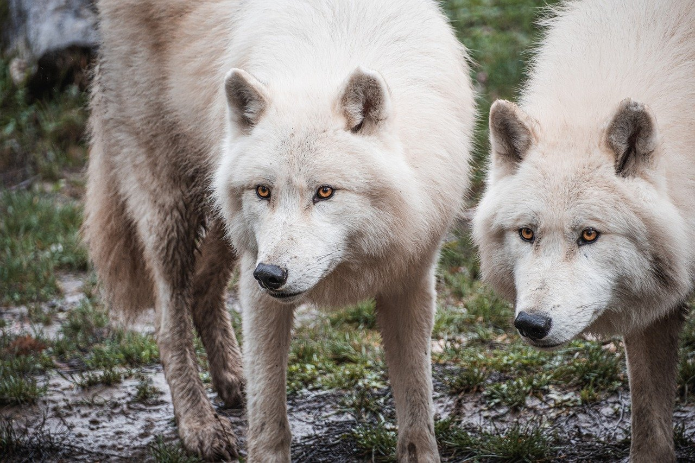

이미지파일을 연결해서 화면에 보여주는 태그
문맥적인 뜻은 없다.
글자처럼 그냥 단순한 컨텐츠로 취급된다.
src속성에 상대경로를 사용하여 이미지를 표현
alt속성은 대체택스트로 이미지가 정상적으로 보이지 않을 때 대신 나오는 택스트이다.
 이 녀석은  이 둘에게 잡아먹힙니다.
영상파일을 연결해서 화면에 보여주는 태그
문맥적인 뜻 없이 컨텐츠으로 취급된다.
너는 꽃처럼 아름답구나...